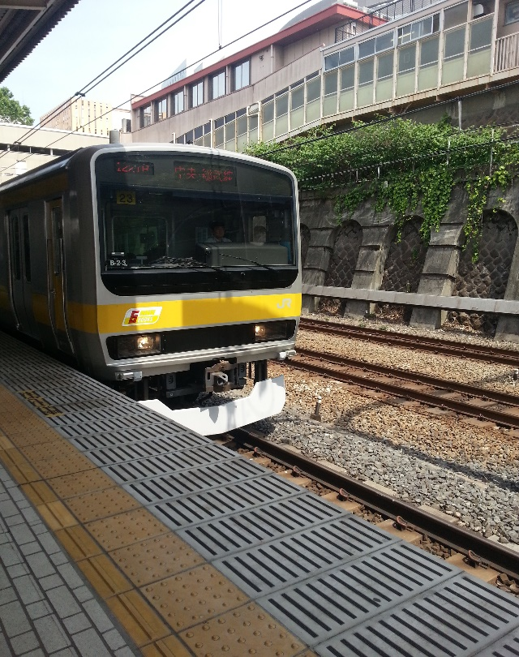

|
新歓旅行第二弾・大回り乗車
2015/05/24 掲載
催行日：５月２３日(土曜日) 市ヶ谷駅１３：１０集合 会員が予想以上にはやく集合したため、予定より２０分はやく市ヶ谷駅を出発しました。 市ヶ谷１３：１３発 総武線三鷹行  四ツ谷１３：１５着 四ツ谷１３：１９発 中央線快速高尾行 八王子１４：１５着 ここで多摩の会員が１名合流しました。 八王子１４：４８発 八高線川越行 高麗川１５：２６着 高麗川１５：４５発 八高線高崎行 倉賀野１７：０５着 倉賀野１７：１７発 湘南新宿ライン平塚行 籠原 １７：４４着 籠原 １７：５５発 上野東京ライン沼津行 上野 １９：０８着 上野 １９：１３発 京浜東北線桜木町行 秋葉原１９：１６着 秋葉原１９：２２発 総武線武蔵小金井行 飯田橋１９：３０着 （文責：新歓担当 T-01） 
|